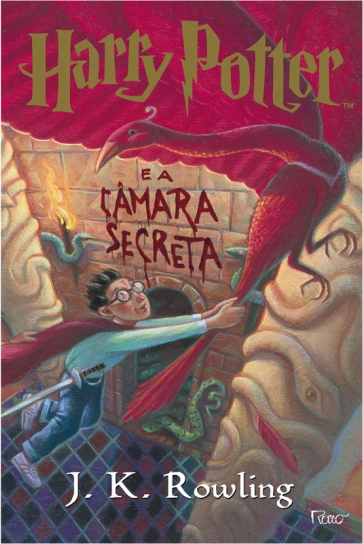

Livro 2
Harry Potter e a Câmara Secreta
Resumo
Após o primeiro ano de Harry em Hogwarts, ele retorna para à casa de seus tios para passar o verão. Um dia, um elfo doméstico chamado Dobby aparece em seu quarto resgatam o garoto da casa dos Dursley com um carro voador. Pouco depois de chegar em Hogwarts, mensagens começam a aparecer nas paredes dos corredores revelando que a Câmara Secreta foi aberta novamente e que o herdeiro de Slytherin matará todos os alunos que não provém de uma família bruxa. Depois disso, alguns habitantes da escola começam a aparecer petrificados.
Enquanto isso, Harry, Ron e Hermione descobrem a Murta-Que-Geme, o fantasma de uma menina que foi assassinada quando a Câmara foi aberta pela última vez no banheiro em que morreu. Murta mostra a Harry um diário que pertence a Tom Marvolo Riddle. Apesar de todas as páginas estarem em branco, Harry recebe uma resposta quando escreve. Finalmente, o livro o mostra Hogwarts cinquenta anos antes. Lá, ele vê Tom Riddle, um aluno na época, acusando Rubeus Hagrid de ter aberto a Câmara.
Poster do Filme
Trailer
Curiosidades
- J.K. Rowling tinha planejado inicialmente que a série Harry Potter teria sete livros desde o início, com cada livro representando um ano escolar de Harry. Ela escreveu o segundo livro, "Harry Potter e a Câmara Secreta", enquanto ainda estava promovendo o primeiro livro.
- O personagem Gilderoy Lockhart, que é introduzido neste livro, foi inspirado em um professor da escola de Rowling. Ela descreveu o professor como sendo arrogante e convencido, e muitas das histórias de Lockhart foram baseadas nas histórias que o professor contou sobre si mesmo.
- A primeira edição americana do livro teve um erro de digitação em uma das passagens. Em vez de "1 wand" (1 varinha), a edição dizia "1 wang" (1 pênis). A editora correu para corrigir o erro em futuras edições, tornando a primeira edição um item de colecionador valioso.
- O título original do livro em inglês, "Harry Potter and the Chamber of Secrets", foi traduzido literalmente para muitas outras línguas, incluindo o francês, onde se tornou "Harry Potter et la Chambre des Secrets", e o português, onde se tornou "Harry Potter e a Câmara dos Segredos". No entanto, em alguns idiomas, o título foi modificado para se adequar melhor à cultura local, como no caso do alemão, onde se tornou "Harry Potter und die Kammer des Schreckens" (Harry Potter e a Câmara do Terror).